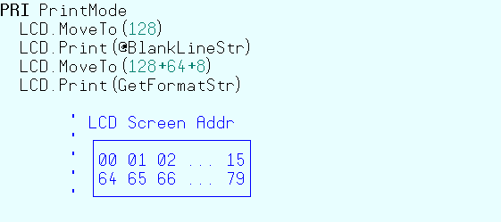
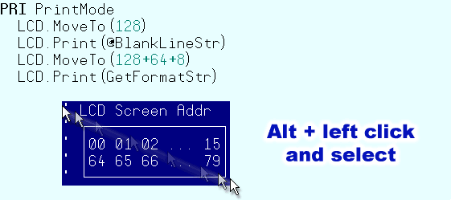
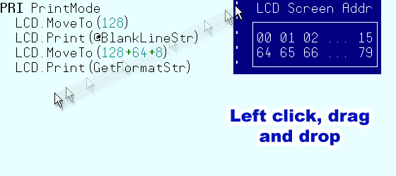

In addition to normal text selections made with the mouse, the Propeller Tool allows block selections (rectangular regions of text). To make a block selection, first press and hold the Alt key, then left-click and drag the mouse to select the text region. After the selection is made, cut and copy operations behave as they do with other selections. The figures below demonstrate block selection and movement of the text block with the mouse.

Step 1: Original code. We'd like to move the “LCD Screen Addr’’ comments to the right of the PrintMode routine.

Step 2: First press and hold the Alt key. Next left-click and drag the mouse to make the selection.

Step 3: Finally, click and drag (from anywhere in the selected block) and drop the selection in the desired location.
Propeller Help Version 1.2
Copyright © Parallax Inc., dba Parallax Semiconductor
6/17/2011